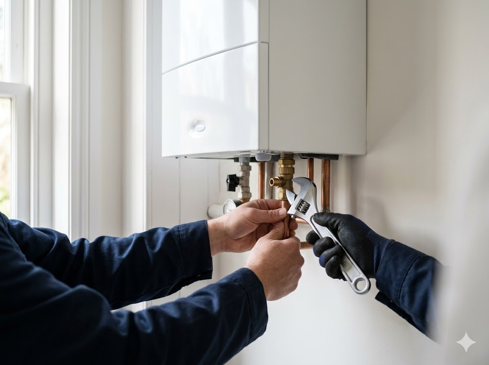

            <section class="section page-inner" aria-label="Kombi servisi">
                <div class="container">
                    <h1 class="section-title" data-i18n="page.kombi.title">Bakıda kombi təmiri və servisi</h1>
                    <p class="section-subtitle" data-i18n="page.kombi.subtitle">Bütün markaların kombilərinin peşəkar servisi. Diaqnostika, təmir, təmizlik və profilaktika.</p>
                    <div class="services-layout">
                        <div>
                            <article class="service-card fade-in" style="margin-bottom:30px;">
                                <div class="service-card-media">
                                    
                                </div>
                                <div class="service-card-body">
                                    <div class="service-icon green"><i class="fas fa-fire"></i></div>
                                    <h2 data-i18n="svc.boiler.title">Kombi təmiri və servisi</h2>
                                    <p data-i18n="page.kombi.intro">AliServis.az komandası Bakı və ətraf rayonlarda Immergas, Demirdöküm, Ariston, Baxi, Baymak və digər markaların kombilərinin təmiri və servisini həyata keçirir.</p>
                                    <ul class="service-list">
                                        <li><i class="fas fa-check-circle"></i> <span data-i18n="svc.boiler.detail.l1" data-i18n-html><strong>Diaqnostika</strong> – Kombi sistemində problemlərin dəqiq müəyyən edilməsi.</span></li>
                                        <li><i class="fas fa-check-circle"></i> <span data-i18n="svc.boiler.detail.l2" data-i18n-html><strong>Ehtiyat hissələrinin dəyişdirilməsi</strong> – Orijinal ehtiyat hissələri ilə əvəzləmə.</span></li>
                                        <li><i class="fas fa-check-circle"></i> <span data-i18n="svc.boiler.detail.l3" data-i18n-html><strong>Təcili təmir</strong> – Qış aylarında sürətli reaksiya və təcili kombi təmiri.</span></li>
                                        <li><i class="fas fa-check-circle"></i> <span data-i18n="svc.boiler.detail.l4" data-i18n-html><strong>Profilaktik servis</strong> – Mövsümi texniki xidmət və təmizlik.</span></li>
                                    </ul>
                                </div>
                            </article>
                            <div class="masters-grid" style="margin-bottom:30px;">
                                <article class="master-card fade-in">
                                    
                                    <div class="master-card-content">
                                        <h3 data-i18n="masters.boiler.title">Kombi ustası</h3>
                                        <p data-i18n="masters.boiler.desc">Kombi və istilik sistemlərinin diaqnostikası, təmiri və servisi</p>
                                    </div>
                                </article>
                                <article class="master-card fade-in">
                                    
                                    <div class="master-card-content">
                                        <h3>Kombi Temiri</h3>
                                        <p>Bütün markaların kombilərinin təcili təmiri və servisi – Immergas, Demirdöküm, Ariston, Baxi</p>
                                    </div>
                                </article>
                            </div>
                            <div class="work-gallery-grid">
                                <article class="work-card fade-in">
                                    
                                    <div class="work-card-content">
                                        <h4 data-i18n="work.4.title">Kombi quraşdırılması</h4>
                                        <p data-i18n="work.4.desc">Bakıda kombinin peşəkar montajı və qoşulması.</p>
                                    </div>
                                </article>
                                <article class="work-card fade-in">
                                    
                                    <div class="work-card-content">
                                        <h4 data-i18n="cert.3.title">Kombi servisi</h4>
                                        <p data-i18n="cert.3.desc">İstilik sistemlərinin xidməti və profilaktikası</p>
                                    </div>
                                </article>
                            </div>
                        </div>
                        <aside>
                            <div class="ad-space ad-space-sidebar"><span data-i18n="ad.sidebar">Yandex Direct</span></div>
                            <div style="background:var(--primary);color:var(--white);border-radius:var(--radius-lg);padding:28px;margin-top:20px;text-align:center;">
                                <i class="fas fa-phone-volume" style="font-size:2rem;margin-bottom:12px;"></i>
                                <h3 style="font-size:1.1rem;margin-bottom:8px;" data-i18n="page.services.consult">Pulsuz məsləhət</h3>
                                <p style="font-size:0.9rem;opacity:0.9;margin-bottom:16px;" data-i18n="page.services.consult.desc">Servis xidmətləri haqqında sualınız var?</p>
                                <a href="tel:+994554770327" class="btn btn-secondary" style="width:100%;justify-content:center;"><i class="fas fa-phone"></i> <span data-i18n="nav.call">Zəng et</span></a>
                            </div>
                            <div class="ad-space ad-space-sidebar" style="margin-top:20px;"><span data-i18n="ad.sidebar2">Google AdSense</span></div>
                        </aside>
                    </div>
                </div>
            </section>
